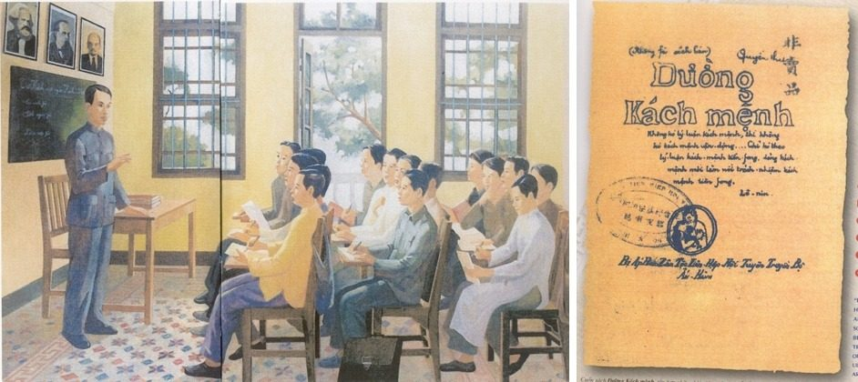
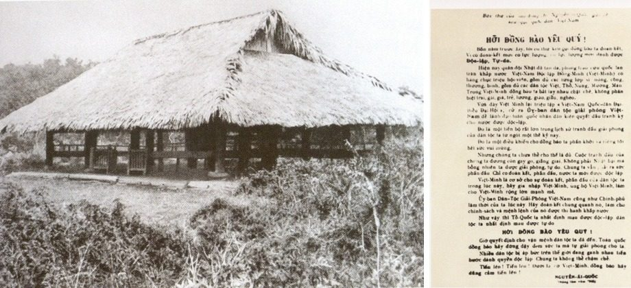
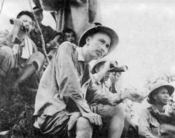
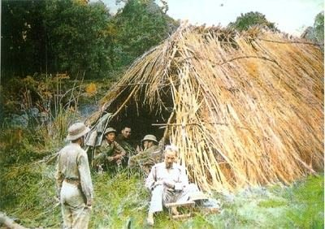
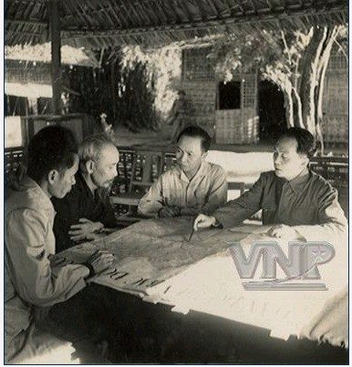
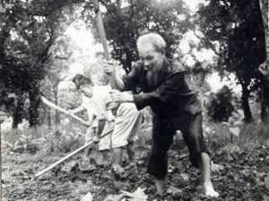
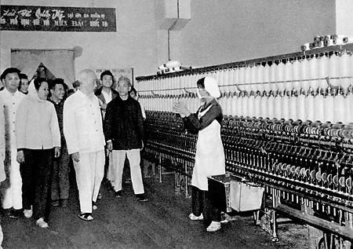
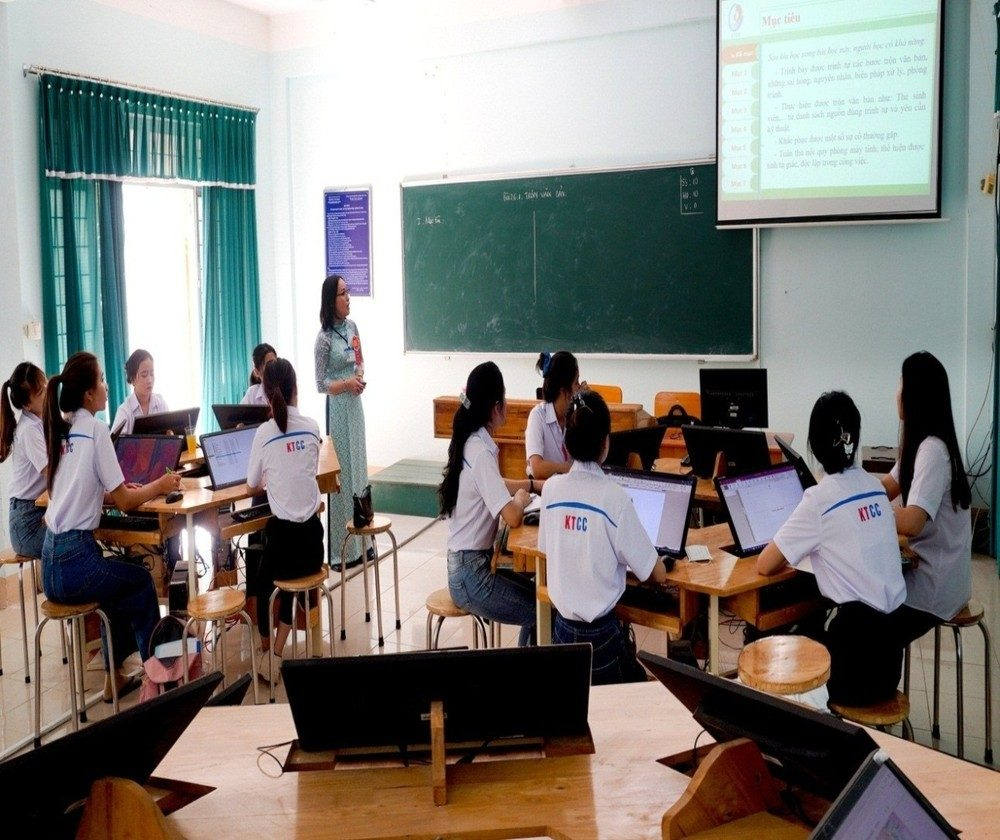
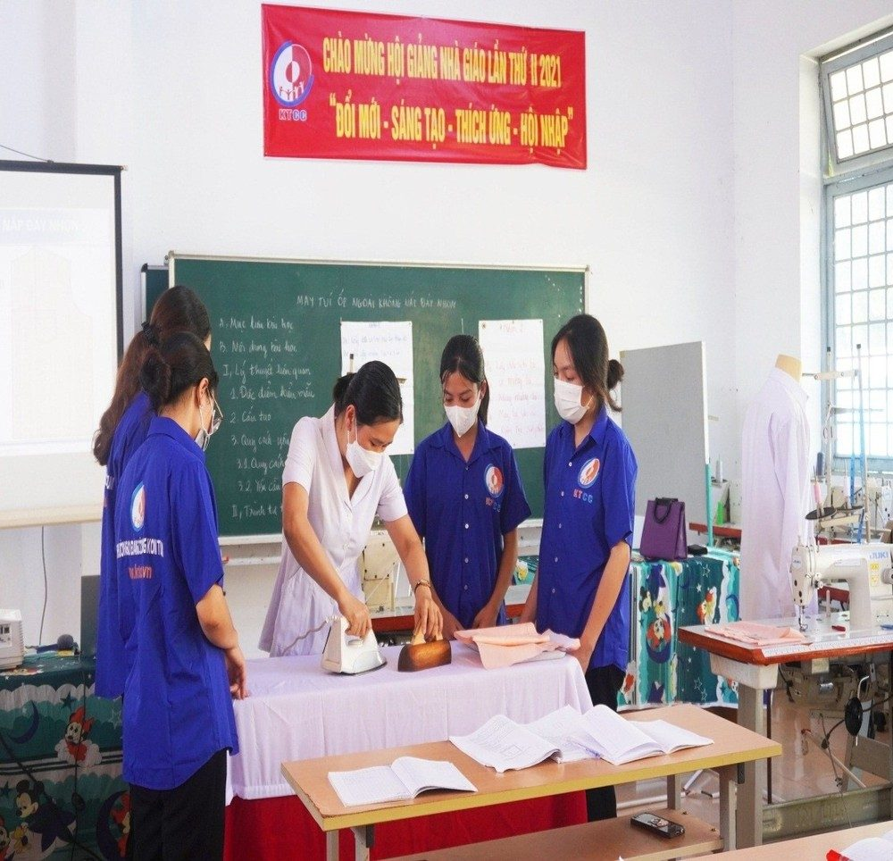
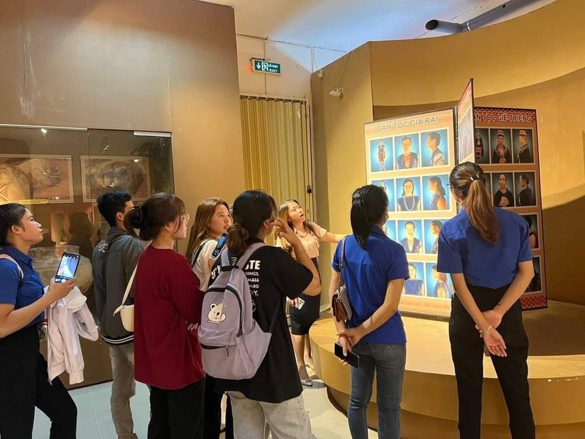

“…tâm đã đồng, lại phải biết cách làm thì làm mới chóng.”
Bác cùng các đồng chí lãnh đạo bàn bạc công việc
12ảnh tư liệu
3phim tư liệu
8trích dẫn
6tấm gương
10câu trắc nghiệm
Tổng quan thành tố
Vận dụng phương pháp luận Mác – Lênin vào thực tiễn Việt Nam
Công cụ chuyển đường lối thành hành động
Cầu nối “học điều đúng” với “làm đúng”
“Học với hành phải đi đôi”
Xuất phát từ thực tiễn, lấy thực tiễn kiểm nghiệm
Theo kịp tình hình khách quan
Xác định mục tiêu chiến lược, nhiệm vụ trọng tâm
“Biết cách làm thì làm mới chóng”
Giành thắng lợi từng bước
Phương pháp Hồ Chí MinhCách làm để hiện thực hóa – thành tố bổ sung tại Đại hội XIV
Kiên định nguyên tắc, linh hoạt sách lược
“Không nên máy móc”
Vận dụng phù hợp từng hoàn cảnh
Chuẩn bị lực lượng, tạo thế
Chớp thời cơ (Tổng khởi nghĩa 8/1945)
Quyết đoán, kịp thời
“Một tấm gương sống…”
Tự phê bình như rửa mặt hằng ngày
Bồi dưỡng, sử dụng, phát huy cán bộ
Ảnh tư liệu
1
Xác định mục đích, đào tạo cán bộ (1925 – 1927)

Mở lớp huấn luyện chính trị ở Quảng Châu và tác phẩm “Đường cách mệnh” (1925 – 1927)Nguyễn Ái Quốc trực tiếp giảng dạy, đào tạo cán bộ; các bài giảng được tập hợp thành tác phẩm “Đường cách mệnh” (1927). Bên trái: tranh minh họa lớp huấn luyện; bên phải: bìa sách “Đường cách mệnh”.
2
Nắm bắt thời cơ, sâu sát thực tiễn (1945 – 1954)

Chớp thời cơ Tổng khởi nghĩa (8/1945)Tại Tân Trào, Quốc dân Đại hội quyết định Tổng khởi nghĩa; Nguyễn Ái Quốc gửi thư kêu gọi đồng bào cả nước đứng lên. Bên trái: đình Tân Trào; bên phải: Thư kêu gọi Tổng khởi nghĩa.Bác Hồ đi công tác ở chiến khu Việt BắcBác lội suối, vượt rừng cùng cán bộ đi công tác, trực tiếp nắm tình hình cơ sở.

Chủ tịch Hồ Chí Minh tại mặt trận Biên giới (1950)Người trực tiếp ra mặt trận quan sát, theo dõi, chỉ đạo chiến dịch.

Chủ tịch Hồ Chí Minh làm việc ở chiến khuBác làm việc ngay giữa núi rừng, sâu sát cán bộ, chiến sĩ và thực tiễn kháng chiến.

Bàn kế hoạch tác chiến Chiến dịch Điện Biên Phủ (Đông Xuân 1953 – 1954)Chủ tịch Hồ Chí Minh cùng các đồng chí Trường Chinh, Phạm Văn Đồng, Võ Nguyên Giáp bàn kế hoạch tác chiến.
3
Nêu gương, kiểm tra, kiểm soát (1945 – 1965)

Bác Hồ cùng các đồng chí tăng gia sản xuất ở Phủ Chủ tịchDù bận trăm công nghìn việc, Bác vẫn trực tiếp lao động, tăng gia sản xuất.

Bác Hồ thăm Nhà máy Dệt 8-3 (1965)Bác đến tận phân xưởng, trực tiếp xem xét sản xuất, trò chuyện với công nhân.
4
Sinh viên Trường Cao đẳng Kon Tum học đi đôi với hành (ảnh liên hệ hôm nay)

Giờ học thực hành của sinh viên ngành Giáo dục Mầm non ★Sinh viên thực hành nghề trong phòng học chuyên môn.Giờ học thực hành của sinh viên ngành DượcSinh viên rèn luyện kỹ năng nghề nghiệp trong phòng thực hành.

Giờ học thực hành của sinh viên ngành May thời trangSinh viên thực hành tạo sản phẩm tại xưởng, lớp học nghề.

Sinh viên ngành Công tác xã hội tham quan Bảo tàng Kon TumGiờ học trải nghiệm, tìm hiểu lịch sử, văn hóa địa phương.
Phim tư liệu
Phim tư liệu đang được cập nhật
Trích dẫn, tác phẩm của Bác
Trích dẫn · Phương pháp Hồ Chí Minh
Bấm vào trích dẫn hoặc ảnh để phóng to
Mạch trích dẫnTám trích dẫn đi theo mạch
01Thống nhất mục đích và cách làm
02Lý luận gắn với thực tiễn
03Linh hoạt, sáng tạo, theo kịp tình thế
04Tự phê bình và phê bình
05Nêu gương
011927
Phải biết cách làm thì làm mới chóng
Sự thống nhất về nhận thức, ý chí chỉ thành thắng lợi khi có phương pháp đúng – cơ sở để chuyên đề toàn khóa Đại hội XIV bổ sung thành tố “phương pháp”.
“
Muốn đồng tâm hiệp lực, muốn bền gan thì trước ai ai cũng phải hiểu rõ vì sao mà phải làm, vì sao mà không làm không được, vì sao mà ai ai cũng phải gánh một vai, vì sao phải làm ngay không nên người này ngồi chờ người khác. Có như thế mục đích mới đồng; mục đích có đồng, chí mới đồng; chí có đồng, tâm mới đồng; tâm đã đồng, lại phải biết cách làm thì làm mới chóng.
02
Học với hành phải đi đôi
Phương pháp lý luận gắn liền với thực tiễn; nền tảng của bước chuyển từ “làm theo” sang “thực hành”.
“
Học với hành phải đi đôi. Học mà không hành thì học vô ích. Hành mà không học thì hành không trôi chảy.
039/1949
Học để làm việc, làm người, làm cán bộ
Xác định đúng mục đích học tập là bước đầu tiên của phương pháp học tập; học gắn với rèn luyện đạo đức.
“
Học để làm việc, làm người, làm cán bộ. Học để phụng sự Đoàn thể, phụng sự giai cấp và nhân dân, phụng sự Tổ quốc và nhân loại. Muốn đạt mục đích thì phải cần, kiệm, liêm chính, chí công, vô tư.
04
Không nên máy móc
Phương pháp “dĩ bất biến, ứng vạn biến”: kiên định nguyên tắc, linh hoạt trong cách làm.
“
Không nên máy móc, phải biết tùy hoàn cảnh mà vận dụng cho đúng.
05
Theo kịp tình hình khách quan
Xuất phát từ thực tiễn, lấy thực tiễn làm tiêu chuẩn kiểm nghiệm; thường xuyên kiểm điểm để điều chỉnh chủ trương, cách làm.
“
Phải biết rằng tình hình khách quan thay đổi hàng giờ, hàng phút, một chủ trương của ta hôm nay đúng, hôm sau đã không hợp thời, nếu ta không tỉnh táo kiểm điểm… nhất định ta sẽ không theo kịp tình thế…
06
Tự phê bình như mỗi ngày phải rửa mặt
Phương pháp tự phê bình và phê bình – thường xuyên, tự giác như sinh hoạt hằng ngày.
“
Mỗi cán bộ, đảng viên, mỗi ngày phải tự kiểm điểm, tự phê bình, tự sửa chữa như mỗi ngày phải rửa mặt. Được như thế thì trong Đảng sẽ không có bệnh mà Đảng sẽ mạnh khỏe vô cùng.
07
Một tấm gương sống
Phương pháp nêu gương – phương pháp giáo dục, vận động có sức thuyết phục nhất.
“
Một tấm gương sống còn có giá trị hơn một trăm bài diễn văn tuyên truyền.
08
Làm gương mẫu và biết lãnh đạo
Kết hợp nêu gương với phương pháp lãnh đạo, tổ chức đúng thì việc khó cũng thành công.
“
Nếu chúng ta làm gương mẫu và biết lãnh đạo thì bất cứ công việc gì khó khăn đến đâu cũng nhất định làm được.